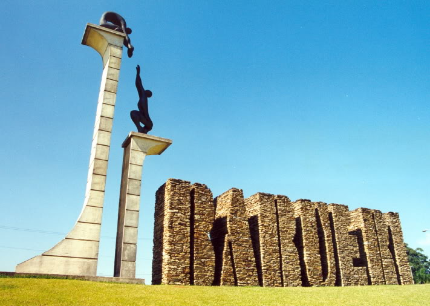
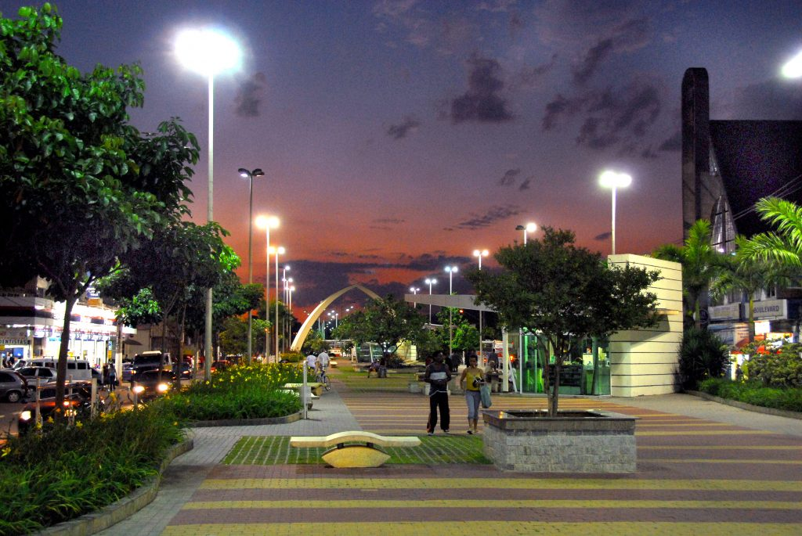
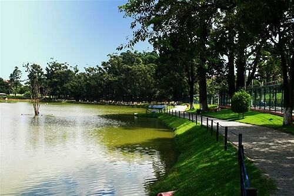
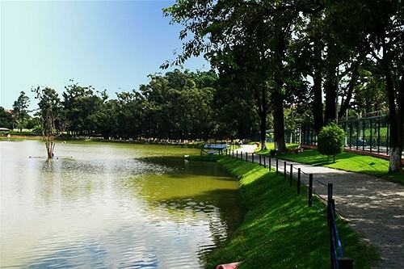
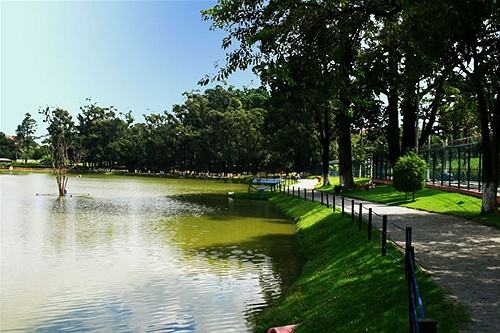
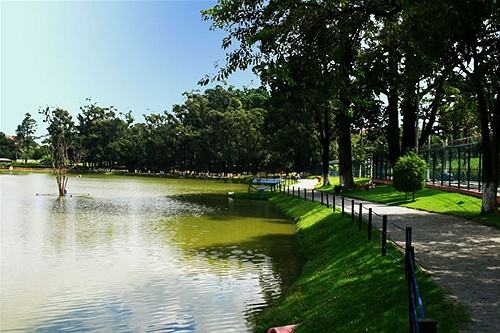

 



Barueri é um município da Região Metropolitana de São Paulo, no estado de São Paulo, na Região Sudeste do Brasil.A fundação de Barueri remonta à época das missões jesuíticas, em meados do século XVI.Segundo os historiadores a origem da cidade foi o aldeamento de Barueri, fundado em 11 de novembro de 1560 pelo padre José de Anchieta, que ergueu na margem direita do rio Tietê, pouco acima da confluência com o Rio Barueri.
O Museu Municipal de Barueri oferece exatamente esse tipo de experiência, e fica no bairro Jardim Belval. É o local onde fica armazenado o acervo fotográfico da cidade de Barueri, além de muitos objetos e vestígios das antigas comunidades indígenas que habitavam a região.O lugar está instalado em um antigo casarão, datado de 1920, que foi sede de uma olaria chamada Belo Vale: trata-se de um ambiente voltado à cultura e ao conhecimento.O bairro onde está localizado homenageia essa antiga fábrica, se chama Jardim Belval. A entrada no museu é gratuita.
Parque Municipal Dom José. Fica no bairro de Jardim Tupanci e recebe muitos esportistas em suas dependências.Lá, é possível praticar esportes como: tênis, corrida, caminhada, rugby, dança, capoeira, skate e muitas outras.O parque ocupa uma área de 95 mil m², e recebe visitantes que querem o sossego e o abrigo das árvores, os jogadores de rugby do União Rugby Alphaville e os milhares de interessados em sua enorme estrutura esportiva.
Qualidade de vida, beleza e segurança. Assim é resumida a área de Alphaville na cidade de Barueri, SP. Trata-se de um bairro com sistema de funcionamento de autogestão. O lugar é formado por vários condomínios de luxo, além da área industrial e comercial. Tem shoppings, hospitais, hotéis, supermercados, cinema e tudo o que uma família precisa para passar férias confortavelmente.
| Nome do prefeito | Ano eleito | Partidos | |
|---|---|---|---|
| Rubens Furlan | 1º de janeiro de 2021 | PSDB | Atual |
| Gilberto Macedo Gil Arantes | 1º de janeiro de 2013 | DEM | |
| Rubens Furlan | 1º de janeiro de 2009 | PMDB | |
| Rubens Furlan | 1º de janeiro de 2005 | PMDB |
| Dados tecnicos baseados em 6 pontos , sendo eles Populaçao, trabalho e rendimento, educação, economia, saúde, território e ambiente | ||
|---|---|---|
| POPULAÇÃO | População estimada [2021] | 279.704 pessoas |
| TRABALHO E RENDIMENTO | Salário médio mensal dos trabalhadores formais | 4,1 salários mínimos |
| EDUCAÇÃO | Matrículas no ensino fundamental | 52.487matrículas |
| ECONOMIA | PIB per capita | R$ 192.647,61 |
| SAÚDE | Mortalidade Infantil | 8,9 óbitos por mil nascidos vivos |
| TERRITÓRIO E AMBIENTE | Área da unidade territorial | 65,701km² |
Todos os dados usados na tabela sao fornecidos pelo IBGE : Site do IBGE